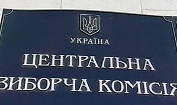

Государственное казначейство Украины открыло ассигнования для ЦИКа на финансирование выборов президента, сообщает "Украинская правда" со ссылкой на заявление замглавы ЦИКа Жанны Усиенко-Черной. ЦИКу уже выделено около 23 миллионов в пересчете на доллары. По словам чиновницы, этих средств должно хватить на работу комиссии до конца 2009 года.
Ранее президент Украины Виктор Ющенко потребовал, чтобы правительство немедленно выделило средства на проведение выборов, так как в противном случае они могли оказаться под угрозой срыва.
Первый тур президентских выборов на Украине состоится 17 января 2010 года.